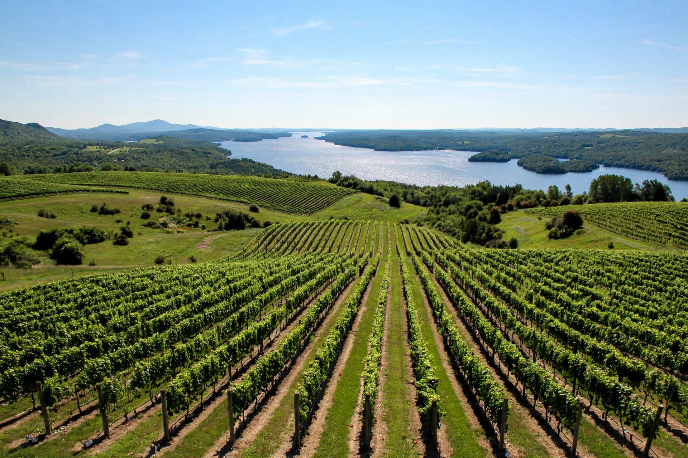

Eastern Townships
Lakes, mountains, and vineyards in Quebec's gentlest corner — the Cantons-de-l'Est.

Southeast of Montreal, toward the American border, the land softens. The Eastern Townships (Cantons-de-l'Est) are a patchwork of rolling farmland, round-topped mountains, and long glacial lakes — settled by Loyalists and later by French Canadians, with a village architecture of white churches and covered bridges that feels distinct from the rest of Quebec. It's the province's mellowest region, and it knows it.
Magog and Lac Memphrémagog
Magog sits at the northern tip of Lac Memphrémagog, a 40-kilometre lake that stretches south into Vermont. The town's main street runs down to the waterfront, where a beach, a marina, and a long lakeside promenade make it one of the most pleasant small downtowns in Quebec. In summer the lake is the whole point — swimming, sailing, and the slow cruise boats that work the water. Legend says a sea serpent named Memphré lives in the depths; the locals will tell you about it with a straight face.
Just west of town, Mont-Orford rises over the lake. Parc national du Mont-Orford, run by SEPAQ, protects the mountain and its surroundings: hiking trails to the summit, the winding road up for the views, and in winter, the Mont-Orford ski area on the mountain's flanks. The park's Étang Fer-de-Lance and the summit lookouts are the classic stops.
Sutton and the mountain villages
South of Magog, the village of Sutton sits beneath Mont Sutton, a ski hill with a loyal following and some of the best glade skiing in the region. The village itself is small and artsy — galleries, cafés, and a main street that fills on weekends. Nearby Abercorn and Frelighsburg are worth the detour for their orchards; Frelighsburg in particular has become a cider and food destination, with working orchards you can walk through in the fall.
Further east, the town of Lac-Brome (Knowlton) is the historic heart of the Townships' English-speaking community, with a main street of antique shops and old inns around Brome Lake. It's a different flavour of Quebec — and a reminder of the region's layered history.
The Route des vins
Quebec's wine country runs through the Brome-Missisquoi area, centred on Dunham. The Route des vins links more than twenty vineyards across the rolling countryside between Dunham, Saint-Armand, and Brigham — a signposted driving route you can do in a day, stopping for tastings. The region's cold-hardy hybrids won't taste like Bordeaux, and the winemakers will be the first to tell you so; what you get instead is crisp whites, ice wines, and a farm-gate culture of tastings, local cheese, and long lunches. Harvest season, late September into October, is the best time to go.
Getting there
- From Montreal: Autoroute 10 east to Magog (about 90 minutes); continue on the 10/55 toward Sherbrooke, or drop south on Route 133/Route 104 for Sutton and the wine route.
- From the US: the region borders Vermont — crossings at Highwater, Abercorn, and Stanstead make it an easy add-on to a New England trip.
- Best months: June–October for lakes, hiking, and the wine route; January–March for skiing at Orford, Sutton, and Bromont.
- Good to know: this is Quebec's most bilingual region — you'll hear English and French mixed freely, especially around Knowlton and North Hatley.
North Hatley and the quiet side
At the north end of Lac Massawippi, the village of North Hatley is the Townships' refined side — old summer homes, a small marina, and a main street made for slow afternoons. It's a good base if Magog feels too busy, and the drive around the lake on Chemin de North Hatley is one of the prettiest short drives in the region.
The Townships don't shout. There's no single landmark on the scale of Percé Rock or Mont-Tremblant here — the appeal is the accumulation of small pleasures: a vineyard lunch, a lake swim, a covered bridge on a back road, a summit view over patchwork fields. Give it two or three unhurried days and it gets under your skin.